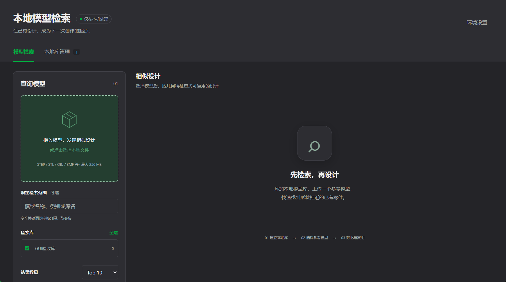

在你的电脑上建立 3D 模型「形状检索库」：拖入一个模型，即可按几何形状找到相似的已有设计。 深度 Shape 特征 + 余弦相似度检索，Windows x64 / M 系列 Mac 免 Python 安装。

面向本地设计资产的形状检索引擎，为「复用已有设计」而生。
选择一个放有 3D 模型的文件夹，自动建立形状索引；支持多个库并存。
拖入 STEP / STL / OBJ / 3MF / PLY / GLB 等模型，按形状相似度返回 Top-K 结果。
查询与结果均可本地交互预览（three.js 渲染），支持「以此模型继续检索」二跳搜索。
检索结果可直接交给本机已安装的 CAD 程序修改：创建副本编辑或直接编辑原文件；多个程序可选。
服务仅监听 127.0.0.1（带随机会话令牌）；完整安装包下载后无需联网，模型与特征不出本机。
安装包内置 Python、CPU 推理依赖和权重；首次启动不安装 pip 依赖。请以 Release 实际附件为准，Source code ZIP 不是安装包。
*-Windows-x64-Setup.exe，双击安装*-Portable.zip，运行 LocalModelSearch.exe。*-macOS-arm64.dmg，将应用拖入 ApplicationsLocalModelSearch.apppython scripts/setup.py（需自行准备 Python 3.11）。
建库 → 检索 → 复用，三步完成一次形状查找。
「新建检索库」→ 选择放有 3D 模型的文件夹 → 等待索引完成。
把查询模型拖入左侧卡片（或点击选择本地文件）→ 点「查找相似模型」。
点击结果 3D 预览；「打开所在文件夹」定位磁盘位置；「以此模型继续检索」继续发散。
| 项目 | 要求 |
|---|---|
| 操作系统 | Windows 10/11（x64）；macOS 14+（Apple Silicon / M 系列） |
| Python | 安装包已内置，不需要系统 Python |
| 磁盘空间 | 建议至少 5 GB，模型与索引另计 |
| 内存 | 建议 8 GB 及以上 |
| 网络 | 下载和更新时需要；推理与预览可离线 |
遇到问题？先看这里，多数问题一句话能解决。
%LOCALAPPDATA%\LocalModelSearch；Mac：~/Library/Application Support/LocalModelSearch。startup.log，后台日志在 sessions/<会话>/launcher.log。反馈前隐藏个人路径和会话令牌。
127.0.0.1，无需开放公网或局域网端口。
data 文件夹。仅复制索引，不删除源目录，不覆盖目标已有库，不复制会话或配置。原模型路径必须继续存在；需要时按提示刷新索引。
STEP/STP、STL、OBJ、3MF、PLY、
GLB/GLTF、OFF；单个文件最大 256 MB。